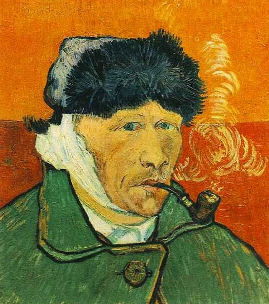
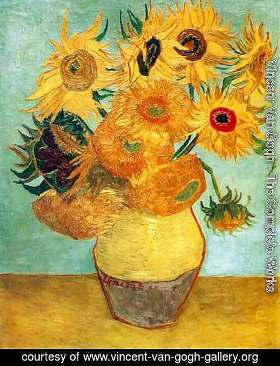

| | Nascimento | | Falecimento | | Períodos | | Nome completo | | Nacionalidade |
|---|---|---|---|---|
| | 30 de março de 1853 | | 29 de julho de 1890 | | Realismo, Pós-impressionismo, Arte moderna | | Vincent Willem van Gogh | | Holandês |

Vincent Willem Van Gogh foi um pintor holandês nascido em 30 de Março de 1853, considerado um dos artistas mais influentes dos últimos tempos, embora seu reconhecimento tenha se dado apenas depois de sua morte. Van Gogh nunca imaginou a fama que viria a ter. Era filho de Theodorus Van Gogh e Cornélia, uma mulher com tendências artísticas, tinha quatro irmãos mais novos, mas foi com Theo, segundo filho do casal, que Van Goh estabeleceu uma forte relação marcada por cartas trocadas entre os dois. Com a saúde mental debilitada e acessos de loucura, pôs fim a própria vida em julho de 1890 aos 37 anos.
Embora desenhasse desde criança, começou a pintar relativamente tarde, no entanto soma mais de 800 telas. Entre suas pinturas mais conhecidas estão: Comedores de batatas; Caveira com cigarro acesso; A ponte Debaixo de Chuva; Natureza morta com absinto; A italiana; A vinha encarnada; A casa amarela; Retrato do Dr. Gachet; Girassóis; Vista de Arles com Lírios; Noite Estrelada. Conheça um pouco mais da vida desse grande pintor no vídeo abaixo.
Sua obra pós-impressionista é um relato de sua própria vida, seus trabalhos acompanhavam tudo o que se passava dentro de sua mente, os cenários do seu cotidiano, sua loucura e a maneira como enxergava o mundo... um mundo que, a seus olhos, geralmente era amarelo. Esta cor faz parte de quase toda a obra do pintor. Alguns historiadores afirmam que ele poderia ter sofrido de alguma doença ocular que o fazia enxergar as coisas num tom amarelado. Outros, afirmam que o artista era daltônico.
De noites estreladas aos quartos solitários, campos de trigo e girassóis, Van Gogh teve uma vida difícil, era um gênio perturbado. Trilhou um caminho esburacado pelos surtos de loucura. Tudo o que teve em vida foi a compaixão de seu irmão Theo, com o qual trocava cartas e quem o sustentou a vida toda - e uma orelha cortada. Mas, deixou-nos um legado incomparável. Sua pinceladas são os moinhos que moveram a História da Arte para novos rumos.
